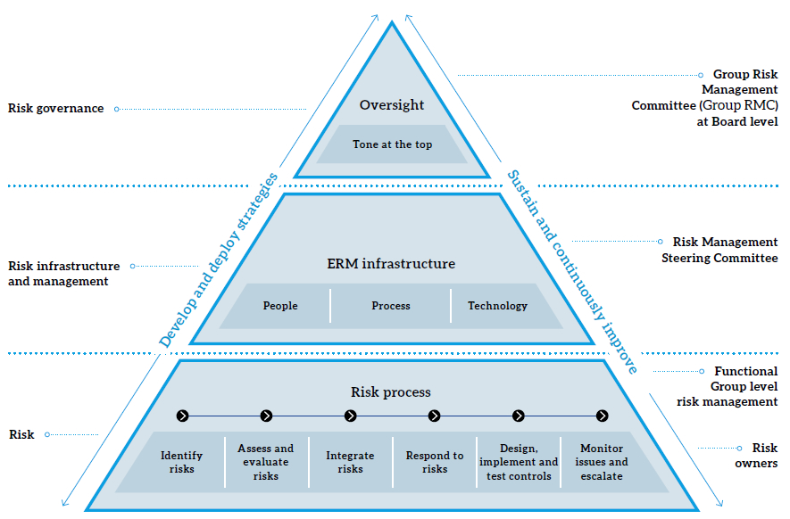

Enterprise Risk Management (ERM)
The present context of highly competitive and volatile business environments, market saturation of telecommunications operators, OTT Players, fast-changing technology, and economic uncertainties are threatening the continuity of our operations. Cyber-attacks are increasing and SLT’s network elements and systems are exposed to this risk. Therefore, it is vital for an organisation to foresee business-critical risks and manage these effectively as such. Having considered this context, the Board of Directors (BOD) gave direction to implement risk management processes across the Organisation in May 2011. Complying with the BOD’s direction; the Enterprise Risk Management (ERM) process and the ERM framework were developed in 2011. References have been made to the best practices of ERM such as ISO 31000 and COSO and due guidance has been obtained from Messrs Deloitte. The implementation of the ERM process within SLT started in early 2012 to identify and manage functional risks to create a risk management culture marked as Business-as-Usual (BAU).
In September 2014, the Board of Directors took another step to keep the ERM process up to date by setting up a Risk Management Committee (RMC) at Board level chaired by a Director. This was to enhance and drive the ERM process within SLT and scrutinise any business-critical top risks at the Board level. In addition, a Risk Management Steering Committee (RMSC) was also formed under the Chairmanship of the Group CEO. This was to aid the RMC in analysing any escalated risks from functional groups and to identify any business-critical risks as such. The ERM framework was thus modified under the guidance of the Group-RMC. In 2016, the ERM process was extended to our subsidiaries with the accommodation of Mobitel, and the RMC was renamed as the Group-RMC. Later in 2016, the Board recommenced the reviewing of group risks with an agenda item in the Audit Committee meeting replacing the Group RMC.
Our culture of risk management has now reached maturity at both functional units and project management. Since the introduction of the ERM in 2011, it has become an important (BAU) process. It encourages senior executives to embed the risk management process into functional units. This has empowered them to take appropriately-calculated positive risks (rewarded risks) and accept, mitigate, avoid or transfer any negative risks (unrewarded risks). The figure below illustrates the organisation of the ERM, its responsibilities and the relevant reaches of the responsible groups. This elaborates that due consideration should be given to enterprise-related risks when making all business decisions. The following table summarises top business-critical risks; both industry-specific and company-specific; gives a brief description of each risk and their potential impact; and details our assessment of the level of severity of such and the actions taken to mitigate them.

| No. | Type | Category | Risk description | Impact | Severity | Mitigation factors |
| 1. | Industry | Regulatory |
Fibre laying by telcos and non-telcos, creating undue competition against the NBN license holder on wholesale business |
Threat for ROI on NBN Loss of business opportunities |
Medium |
|
| 2. | Company | Regulatory |
Delays by TRCSL in allocating a further 20MHz in the 2.5GHz band for the fixed LTE rollout |
Delayed project rollouts Set limitations to the expansion of LTE network | Low | |
| 3. | Industry | Business |
Renewal of Integrated Transmission Network License of Competitors with a new inclusion to provide last mile fibre connectivity |
Increased competition in Broadband Business |
High |
|
| 4. | Company | Financial |
External pressures to recruit outsourced (e.g. SLTHCS) staff as SLT’s permanent employees |
Increased operational costs Degrade the quality of employees |
High |
|
| 5. | Company | Strategic | Non-Existence of a company-wide Business Continuity Plan | Threat to business continuity in disaster situations Financial losses Loss of reputation | Low |
|
| 6. | Industry | Financial | Exposure for FOREX fluctuations | FOREX translation Losses High capital and operational costs in Rupee terms | High |
|
| 7. | Industry | Financial | Declining of International Revenues from On-net traffic due to the existence of Bypass terminations and OTT | Revenue loss | Medium |
|
| 8. | Company | Operational | Data integrity risk | Loss of business opportunities | Low |
|
| 9. | Industry | Financial |
Financial risks due to Government Budget 2016/17 and subsequent customer reaction to taxes |
Reduced ARPU Decline in profit margins | High |
|
| 10. | Company | Financial | Lack of effective governance framework over subsidiaries | Corporate governance compliances | Medium |
|
| 11. | Company | Financial |
Lack of documentary evidence to prove the titles for some of the SLT’s property (transferred to SLT by the state) |
Threat on company non-current assets |
High |
|
| 12. | Industry | Information Security | Cyber Security incidents and leakage of sensitive information | Threat to Business continuity Loss of customer Confidence Loss of Revenue Threat to the competitive position of SLT | High |
|
| 13. | Industry | Legal |
Non-Compliance to Laws, licenses and regulatory conditions would lead to penalties and reputational risk |
Negative impact on brand image Financial risk |
Low |
|